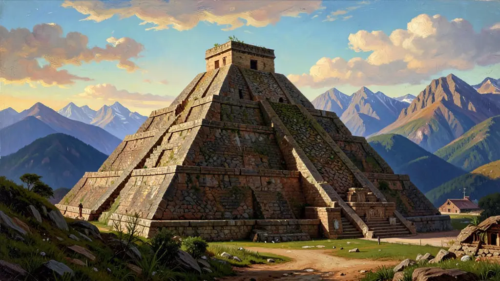
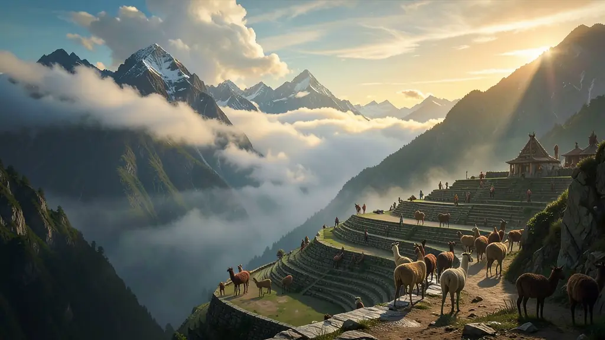
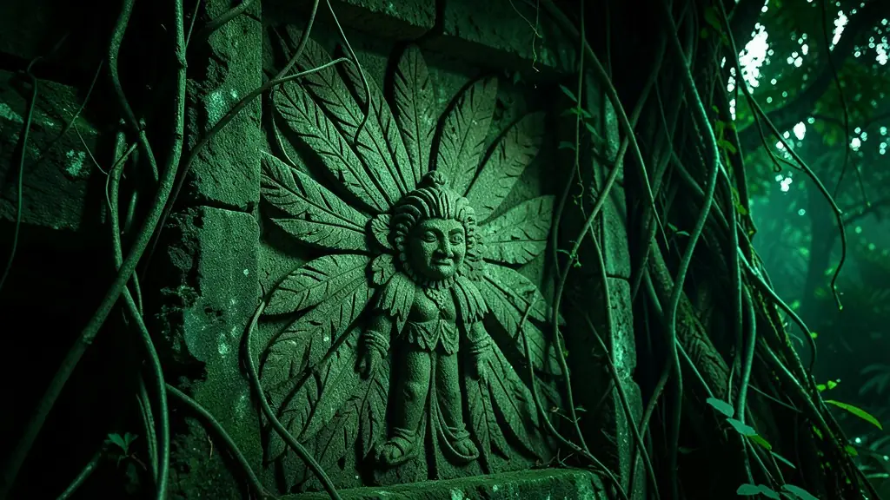

Capítulo 01
1. Maias: Os Observadores de Estrelas
Os Maias nunca foram um império único, mas cidades-estado (como Tikal e Palenque) que compartilhavam a mesma cultura refinada. Eles construíram pirâmides astronômicas tão precisas que, durante o equinócio, a sombra do sol forma uma serpente descendo os degraus em Chichén Itzá. Foram matemáticos geniais, inventores do zero séculos antes dos europeus, e tinham um sistema de escrita que foi quase todo queimado pelos padres espanhóis.

Capítulo 02
2. Astecas: A Veneza das Américas
Tenochtitlán era uma ilha em um lago, com canais e pontes levadiças. Quando Cortez chegou, achou a cidade mais limpa e organizada que Madri ou Paris. Para ter comida no deserto, os astecas criaram as Chinampas: canteiros de lama fértil flutuantes que permitiam até cinco colheitas por ano. A religião era o motor do Estado: o Deus Sol precisava de sangue para continuar brilhando, o que justificava as 'Guerras Floridas' para capturar prisioneiros.

Capítulo 03
3. Incas: Os Senhores das Montanhas
Os Incas não tinham escrita, nem rodas e nem cavalos, mas dominaram a montanha mais alta do mundo. Eles construíram um sistema de terraços de plantio ('andenes') que impedia a erosão e criava microclimas para plantar batatas em alturas impossíveis. Seus mensageiros, os 'Chasquis', corriam por estradas de pedra levando notícias de um canto a outro de um império de 12 milhões de pessoas usando apenas o fôlego e os Quipus.

Capítulo 04
4. O Conflito de Mundos: Deuses ou Demônios?
Em 1519, Cortez chegou com cavalos e canhões ao México. Os astecas acharam que ele era o deus Quetzalcóatl que voltava. No Peru, Pizarro capturou o imperador Atahualpa em Cajamarca agindo de surpresa. O que destruiu essas civilizações não foram apenas as armas de ferro, mas a varíola e a gripe, doenças enviadas pelos europeus que mataram 90% da população antes mesmo da guerra começar. Foi o maior genocídio biológico da história.
Capítulo 05
5. A Herança: O que Sobrou para Nós?
O ENEM valoriza a ideia de que o Brasil e a América Latina são devedores desses povos. Os Incas inventaram a batata, o alimento mais consumido do mundo hoje. Os Maias e Astecas domesticaram o milho e o chocolate. Sem a ciência desses povos, a humanidade seria muito mais pobre. Machu Picchu hoje não é apenas um ponto turístico, mas a prova de que a inteligência americana floresceu de forma única no isolamento do novo mundo.
As civilizações Maia, Asteca e Inca representavam o ápice do desenvolvimento urbano, agrícola e astronômico nas Américas antes da chegada de Colombo. Diferente da imagem eurocêntrica do 'bom selvagem', estas sociedades eram impérios complexos com sistemas de escrita, calendários precisos e engenharias monumentais (como as pirâmides de Tenochtitlán e as terraças de Machu Picchu). A agricultura intensiva (chinampas e terraços) permitia alimentar populações urbanas densas, rivalizando em tamanho com as maiores cidades europeias da época.
A conquista espanhola, liderada por figuras como Cortés e Pizarro, resultou no que os historiadores chamam de 'visão dos vencidos'. O uso de armas de fogo, cavalos e, principalmente, das epidemias de doenças europeias (como varíola e sarampo) dizimaram até 90% das populações nativas. No entanto, a resistência cultural foi tenaz, e elementos dessas civilizações sobrevivem até hoje nas línguas, culinária e crenças dos povos andinos e mesoamericanos, formando a base da identidade mestiça da América Latina.
Para o Enem, este tema é fundamental para discutir a alteridade e o choque cultural. É necessário analisar os mecanismos de exploração impostos pela Espanha, como a Mita e a Encomienda, que adaptaram tradições nativas de trabalho comunitário em sistemas de servidão forçada. O estudo das civilizações pré-colombianas permite desconstruir narrativas de 'superioridade' europeia, revelando a sofisticação intelectual das Américas e as consequências trágicas do colonialismo sobre o patrimônio humano universal.
Fonte: LEÓN-PORTILLA, Miguel. A Visão dos Vencidos: A Tragédia da Conquista narrada pelos Astecas. Porto Alegre: L&PM, 1985.
Atividades interativas
Questões para fixar
A técnica de agricultura asteca conhecida como 'Chinampas' consistia em qual prática de manejo ambiental?
Os Incas utilizavam um sistema de registro numérico e contábil sem o uso da escrita alfabética, baseado em cordas coloridas e nós, chamado de:
Qual foi a principal contribuição dos Maias para a matemática?
Qual foi a função das 'Chinampas' na cidade de Tenochtitlán?
Qual foi o método utilizado pelos Incas para registrar a contabilidade e impostos do império?